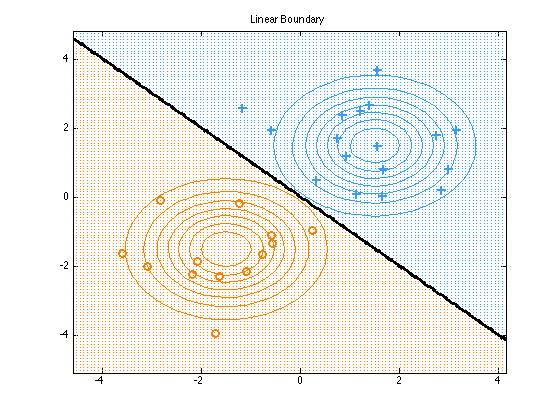
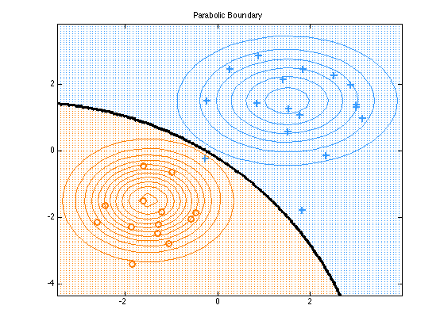
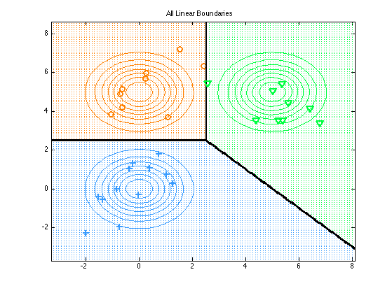
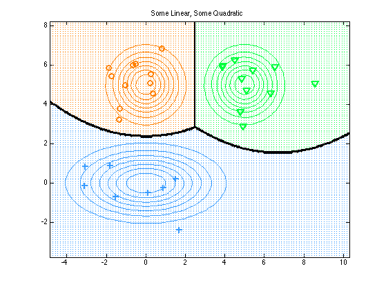

Contents
Plot Decision boundaries induced by a mixture of two or three 2D Gaussians
Based on code by Tommi Jaakkola
% This file is from pmtk3.googlecode.com
Two class linear
model(1).classPrior = [1 1]/2;
model(1).mu = [1.5 1.5 ; -1.5 -1.5]';
model(1).Sigma = repmat(eye(2), [1 1 2]);
model(1).SigmaPooled = eye(2);
model(1).type = 'linear';
Two class quadratic
model(2).classPrior = [1 1]/2;
model(2).mu = [1.5 1.5 ; -1.5 -1.5]';
model(2).Sigma = cat(3, [1.5 0; 0 1], 0.7*eye(2));
model(2).type = 'quadratic';
Three class linear
model(3).classPrior = [1 1 1] /3;
model(3).mu = [0 0; 0 5; 5 5]';
model(3).Sigma = repmat(eye(2), [1 1 3]);
model(3).SigmaPooled = eye(2);
model(3).type = 'linear';
Three class mixed
model(4).classPrior = [1 1 1] /3; model(4).mu = [0 0; 0 5; 5 5]'; model(4).Sigma = cat(3, [4 0; 0 1], eye(2), eye(2)); model(4).type = 'quadratic'; % i.e. not tied
titles = {'Linear Boundary', 'Parabolic Boundary', 'All Linear Boundaries ', 'Some Linear, Some Quadratic'};
fnames = {'dboundaries2classLinear', 'dboundaries2classParabolic', 'dboundaries3classLinear', 'dboundaries3classParabolic'};
setSeed(3); nsamples = 30;
colors = pmtkColors();
xyRange = [-10 10 -10 10];
for i = 1:numel(model)
[X, y] = mixGaussSample(model(i).mu, model(i).Sigma, model(i).classPrior, nsamples);
plotDecisionBoundary(X, y, @(Xtest)discrimAnalysisPredict(model(i), Xtest));
for j = 1:size(model(i).Sigma, 3)
fn = @(x)gaussProb(x, model(i).mu(:, j), model(i).Sigma(:, :, j));
plotContour(fn, xyRange, 'LineColor', colors{j});
end
set(gca, 'XTick', -10:2:10, 'YTick', -10:2:10);
title(titles{i});
printPmtkFigure(fnames{i});
end
   